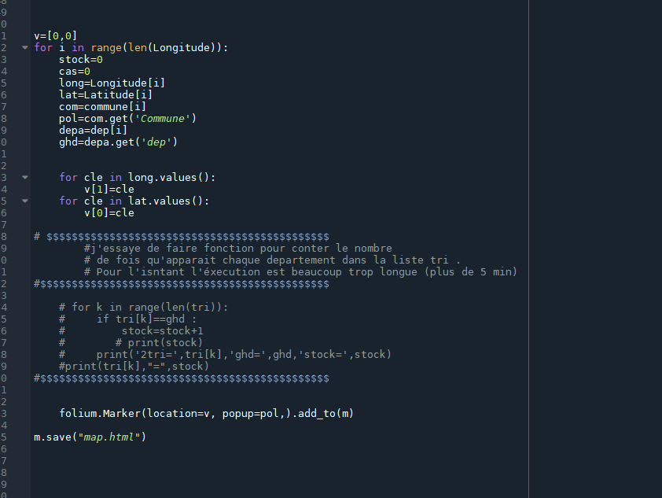

Cette carte presente le taux de personne infecté par le covid 19 depuis 18 mars 2020 par departement Carte de France Covid
cette premiere partie m'as permis de definir les fonctions de csv reader avec les fichier que j'utilise
j'ai crée une variable qui me permet de rajouter des 0 au premier département
Cette partie permet de créer des marqueur et rajouté des donnés pour les afficher en tant que popup
la variable me permet de separer la longitude et la latitude
la deuxième qui est encore en construxtion me permet d'ajouter le nombre de personnes inféctes par le covid 19 par département
Pour commencer un projet informatique il faut déja s'informer sur qu'elle sujet ont doit travailler .
Aprés on doit voir qu'elle bibliotheque informatique on a besoin pour le faire
on peut faire une idée du code qu'on doit faire a l'écrit avant de le taper
on doit tester si notre code marche avec plusieur test comme des print
A la fin du projet , il faut le rendre le plus propre possible pour si la personne voudrait modifier des choses dans le code et qu'il soit simple à comprendre
Retour accueil